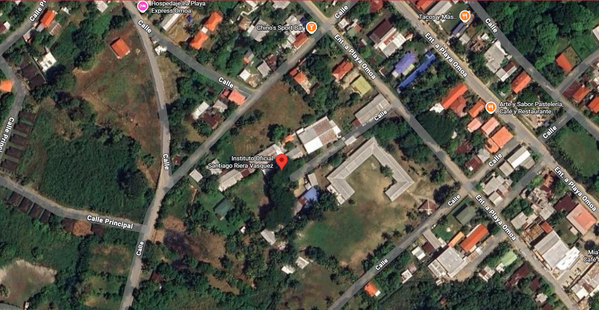

|
Bienvenidos a nuestra instituciónNos complace darles la más cordial bienvenida al sitio web oficial del Instituto Gubernamental Santiago Riera Vásquez. Este espacio ha sido diseñado para brindar información sobre nuestra institución, nuestras actividades académicas, proyectos educativos, eventos y logros que forman parte de nuestra trayectoria como centro de enseñanza. Nuestro instituto se caracteriza por promover una educación integral basada en la excelencia académica, la formación en valores y el desarrollo de competencias que permitan a nuestros estudiantes enfrentar con éxito los retos de la sociedad Además de la formación académica, fomentamos valores fundamentales como el respeto, la responsabilidad, la honestidad, la solidaridad y el compromiso con la comunidad. ¡Bienvenidos y gracias por ser parte de nuestra comunidad educativa! 🎓 ¡CONTÁCTANOS!Teléfonos
Facebook:Ubicación geográfica: IR A GOOGLE MAPS
© 2026 Instituto Gubernamental Santiago Riera Vásquez |